In this tutorial you will learn how to use the data transformation tooling to include data transformation in a predefined Camel route. The Camel route directs messages from a source endpoint that produces XML data to a target endpoint that consumes JSON data. You will add and define a data transformation component that maps the source's XML data format to the target's JSON data format.
JBoss Fuse tooling installed on JBoss Developer Studio. See Install Red Hat JBoss Developer Studio Integration Stack
Maven installed and configured correctly. See Red Hat JBoss Fuse Maven Repositories
the transformation quickstart applications downloaded and installed
Right-click in Project Explorer to open the context menu.
Select > .
Expand the folder, and select .
Click to open the Maven Projects wizard.
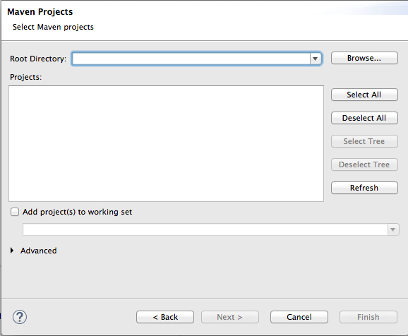Click to find and select the root directory of the
starterquickstart application.If the browse operation finds multiple projects, make sure you select the
starterquickstart application. The full path to thestarterquickstart application appears in the pane.Click .
After the import operation finishes, the
starterproject appears in Project Explorer.In Project Explorer, expand the
starterproject.Double-click
starter/src/main/resources/META-INF/spring/camel-context.xmlto open the route in the route editor's Diagram view.
Click the Source tab to view the underlying XML.
You can see that an XML file is produced from a source endpoint and a JSON file is consumed by a target endpoint.
<?xml version="1.0" encoding="UTF-8"?> <beans xmlns="http://www.springframework.org/schema/beans" xmlns:camel="http://camel.apache.org/schema/spring" xmlns:xsi="http://www.w3.org/2001/XMLSchema-instance" xsi:schemaLocation=" http://www.springframework.org/schema/beans http://www.springframework.org/schema/beans/spring-beans.xsd http://camel.apache.org/schema/spring http://camel.apache.org/schema/spring/camel-spring.xsd"> <camelContext id="camelContext-272d04f8-e498-466d-b34b-3c24d01a4e10" xmlns="http://camel.apache.org/schema/spring" <route id="_route1"> <from id="_from1" uri="file:src/data?fileName=abc-order.xml&noop=true"/> <to id="_to1" uri="file:target/messages?fileName=xyz-order.json"/> </route> </camelContext> </beans>
Click the Design tab to return to Design view.
Remove the arrow connecting the source and target endpoints.
If Console view is not already open, open it now by clicking > > .
![[Note]](imagesdb/note.png) | Note |
|---|---|
Although the following mini tutorials are written to be run in consecutive order, you can run through them in any order, but the Console output per tutorial will differ from that shown. |
In the Palette, expand the Transformation drawer.
Drag a Data Transformation pattern over the canvas and drop it on the Route_route1 container.
The New Transformation wizard opens with the Project, Dozer File Path, and Camel File Path fields auto filled.
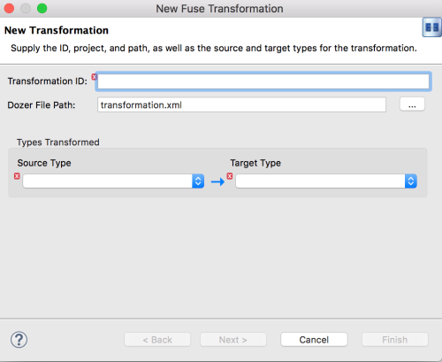Fill in the remaining fields:
In Transformation ID, enter
xml2json.For Source Type, select XML from the drop-down menu.
For Target Type, select JSON from the drop-down menu.
Click .
The Source Type (XML) definition page opens, where you specify either an XML Schema (default) or an example XML Instance Document to provide the type definition of the source data:
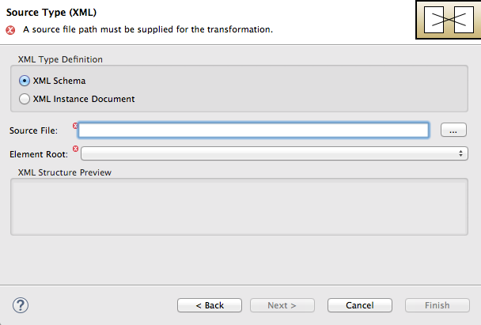Leave XML Schema enabled.
For Source file, browse to the location of the XML schema file or the XML instance file to use for the type definition of the source data, and select it (in this case,
abc-order.xsd).The XML Structure Preview pane displays a preview of the XML structure.
In Element root, enter
ABCOrder.The tooling uses this text to label the pane that displays the Source data items to map.
The Source Type (XML) definition page should now look like this:
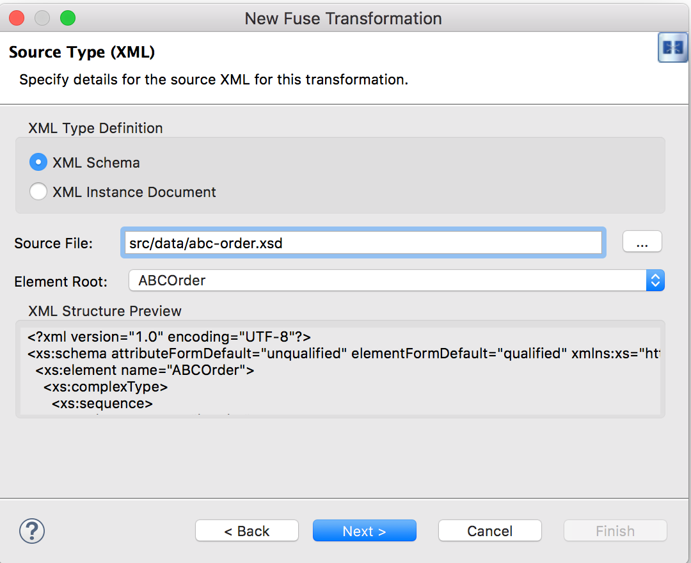Click .
The Target Type (JSON) definition page opens, where you specify the type definition for the target data.
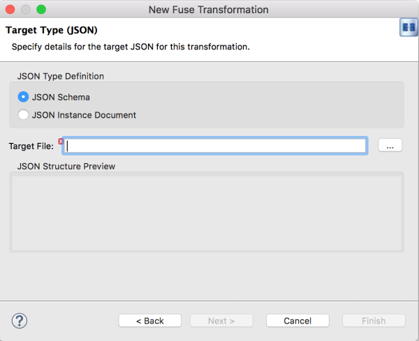Click JSON Instance Document.
In the Target File field, enter the path to the
xyz-order.jsoninstance document, or browse to it. The JSON Structure Preview pane displays a preview of the JSON data structure: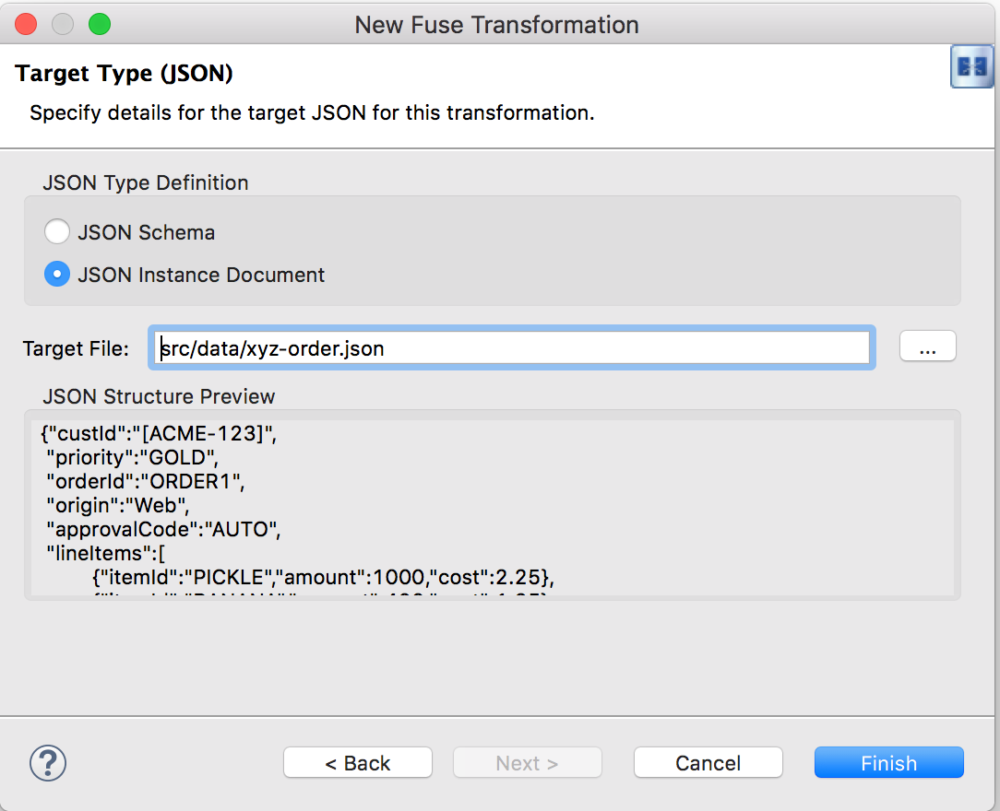Click .
The Transformation editor opens, so you can map data items in your XML source to data items in your JSON target.

The Transformation editor is composed of three panels:
Source—lists the available data items of the source
Mappings—displays the mappings between the source and target data items
Target—lists the available data items of the target
In addition, the editor's Details view, located just below the editor's three panels (once the first mapping has been made), graphically displays the hierarchical ancestors for both the mapped source and target data items currently selected. For example:
Using Details view, you can customize the mapping for the selected source and target data items:
Set property—Modify an existing mapping or map a simple data item to one in a collection (see Mapping a simple data item to a data item in a collection)
Set variable—Specify a constant value for a data item (see Mapping a constant variable to a data item)
Set expression—Map a data item to the dynamic evaluation of a specified expression (see Mapping an expression to a data item)
Add transformation—Modify the value of a mapped data item using a built-in function (see Adding a built-in function to a mapped data item)
Add custom transformation—Modify the value of a mapped data item using the Java method you create or one you previously created (see Adding a custom transformation to a mapped data item)
Expand all items in the Source and Target panels located on left and right sides of the Mappings panel.
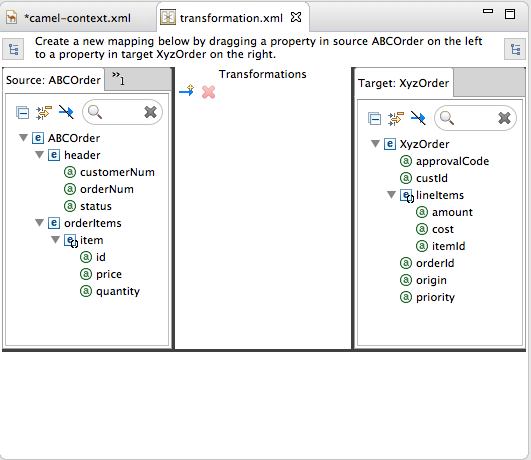Drag a data item from the Source panel and drop it on its corresponding data item in the Target panel.
For example, drag the
customerNumdata item from the Source panel and drop it on thecustIddata item in the Target panel.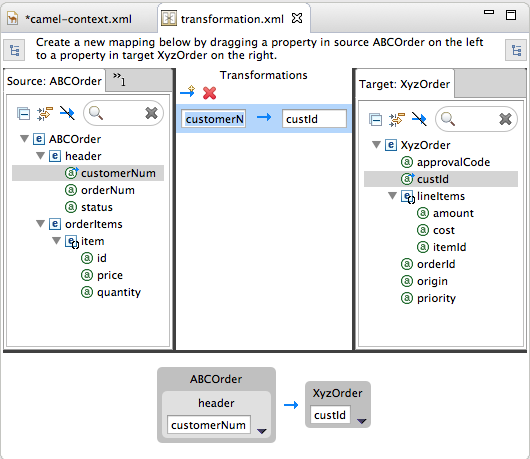The mapping appears in the Mappings panel, and the details of both the Source and Target data items appear below in Details view.
Continue dragging and dropping source data items onto their corresponding target data items until you have completed all basic mappings.
In the
starterexample, the remaining data items to map are:Source Target orderNumorderIdstatuspriorityiditemIdpricecostquantityamountNote You can map collections (data items containing lists or sets) to noncollection data items and vice versa, but you cannot map collections to other collections.
Click on both the Source and Target panels to quickly determine whether all data items have been mapped.
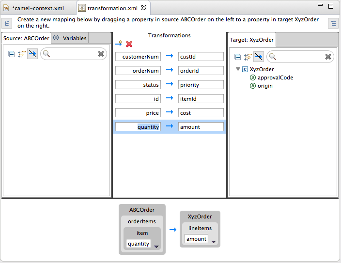Only data items that have not been mapped are listed in the Source and Target panels.
In the
starterexample, the remaining unmapped Target attributes areapprovalCodeandorigin.Click the
camel-context.xmltab to return to the route editor in Design view.Hover your cursor over each endpoint to reveal its connecter arrow.
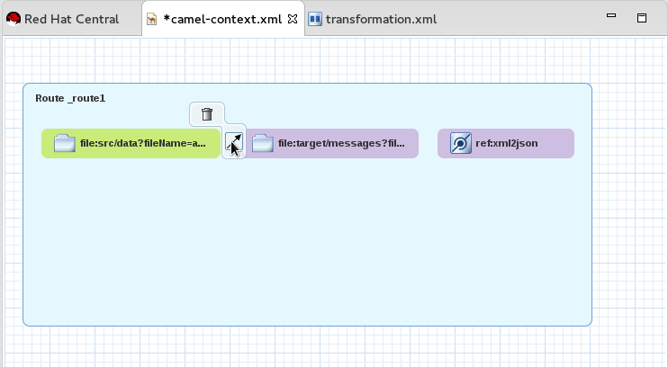Selecting the
file:src/data?fil...node, drag and drop its connector arrow onto theref:xml2jsonnode. Likewise drag and drop the connector arrow from theref:xml2jsonnode onto thefile:target/messa...node.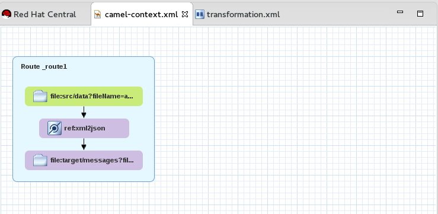Connecting the nodes on the canvas creates a valid Camel route, which you can now save.
Click > .
You can run a JUnit test on your transformation file after you create the transformation test. For details, see Creating the transformation test file and running the JUnit test. If you do so at this point, you will see this output in Console view:
<?xml version="1.0" encoding="UTF-8"?> <ABCOrder xmlns:xsi="http://www.w3.org/2001/XMLSchema-instance" xmlns:java="http://java.sun.com"> <header> <status>GOLD</status> <customer-num>ACME-123</customer-num> <order-num>ORDER1</order-num> </header> <order-items> <item id="PICKLE"> <price>2.25</price> <quantity>1000</quantity> </item> <item id="BANANA"> <price>1.25</price> <quantity>400</quantity> </item> </order-items> </ABCOrder>
for the source XML data, and
{"custId":"ACME-123","priority":"GOLD","orderId":"ORDER1","lineItems":[{"itemId":"PICKLE",
"amount":1000,"cost":2.25},{"itemId":"BANANA","amount":400,"cost":1.25for the target JSON data.
Right-click the
starterproject in Project Explorer, and select > > > .Select to open the New Transformation Test wizard.
In the New Transformation Test wizard, set the following values:
Field Value Package exampleTransformation ID xml2jsonClick .
In Project Explorer, navigate to
starter/src/test/java/example, and open theTransformationTest.javafile.Add the following code to the
transformmethod:startEndpoint.sendBodyAndHeader(readFile("src/data/abc-order.xml"), "approvalID", "AUTO_OK");Click > .
You can now run a JUnit test on your transformation file at any point in these tutorials.
In Project Explorer, expand the
starterproject to expose the/src/test/java/example/TransformationTest.javafile.Right click it to open the context menu, and select .
The JUnit Test pane opens to display the status of the test. To avoid cluttering your workspace, drag and drop the pane in the bottom panel near Console view.
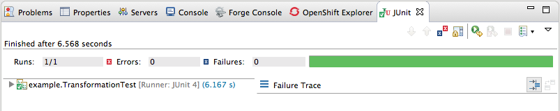Open Console view to see the log output.
When a source/target data item has no corresponding target/source data item, you can map a constant variable to the existing data item.
In the starter example, the target data item
origin does not have a corresponding source data item. To
map the origin attribute to a constant variable:
In the Source panel, click the Variables tab to open Variables view.
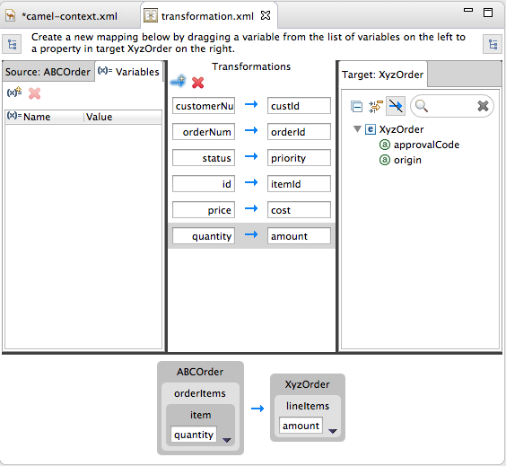In Variables view, click to open the Enter a new variable name dialog.
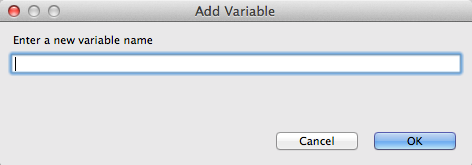Enter a name for the variable you want to create.
For the
starterexample, enterORIGIN.Click .
The newly created variable
ORIGINappears in Variables view in the Name column and the default value "ORIGIN" in the Value column.Click the default value to edit it, and change the value to
Web.Press Enter.
Drag and drop the new variable
ORIGINonto theorigindata item in the Target panel.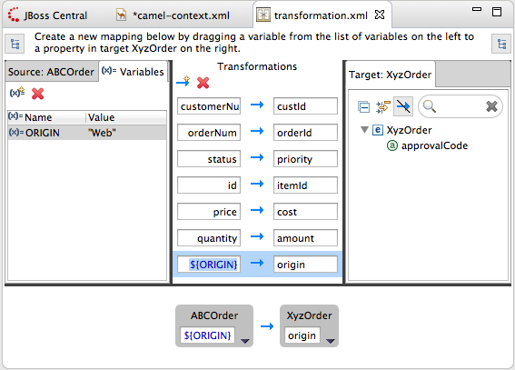The new mapping of the variable
$(ORIGIN)appears in the Mappings panel and in Details view.Run a JUnit test on your
TransformationTest.javafile. For details, see Creating the transformation test file and running the JUnit test.Console view displays the json-formatted output data:
{"custId":"ACME-123","priority":"GOLD","orderId":"ORDER1","origin":"Web", "approvalCode":"AUTO_OK","lineItems":[{"itemId":"PICKLE","amount":1000,"cost":2.25}, {"itemId":"BANANA","amount":400,"cost":1.25}]}
This feature enables you, for example, to map a target data item to the dynamic evaluation of a Camel language expression.
Use the target approvalCode data item, which lacks a
corresponding source data item:
Click to add an empty transformation map to the Mappings panel.
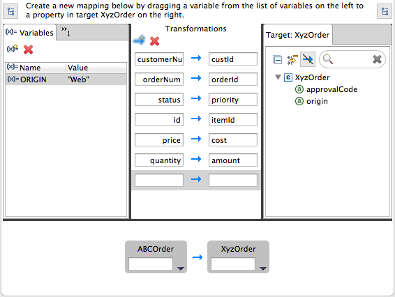From the Target panel, drag and drop the
approvalCodedata item to the target field of the newly created mapping in the Mappings panel.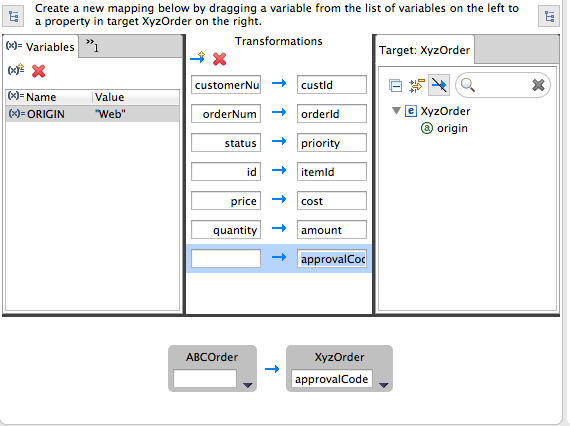The approvalCode data item also appears in Details view's target box.
In Details view, click on the ABCOrder source box to open the drop-down menu.
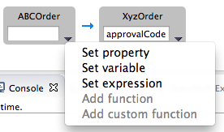Menu options depend on the selected data item's data type. The available options are bolded.
Select to open the Expression dialog.
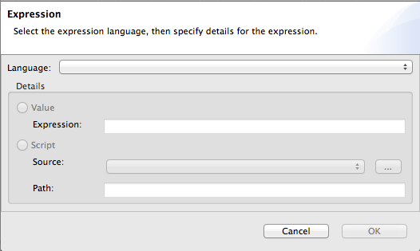In Language, select the expression language to use from the list of those available. Available options depend on the data item's data type.
For the
starterexample, select .In the Details pane, select the source of the expression to use.
The options are Value and Script.
For the
starterexample, click Value, and then enterApprovalID.Click OK.
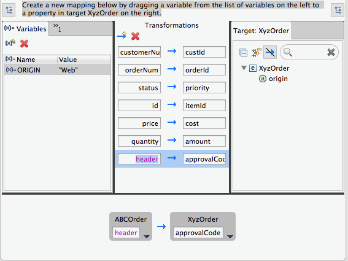Both Mappings panel and Details view display the new mapping for the target data item approvalCode.
Run a JUnit test on your
TransformationTest.javafile. For details, see Creating the transformation test file and running the JUnit test.Console view displays the json-formatted output data:
{"custId":"ACME-123","priority":"GOLD","orderId":"ORDER1","origin":"Web", "approvalCode":"AUTO_OK","lineItems":[{"itemId":"PICKLE","amount":1000,"cost":2.25}, {"itemId":"BANANA","amount":400,"cost":1.25}]}
You may need to modify the formatting of source data items when they do not satisfy the requirements of the target system.
For example, to satisfy the target system's requirement that all customer ids be enclosed in brackets:
Mappings panel, select the customerNum mapping to populate Details view.
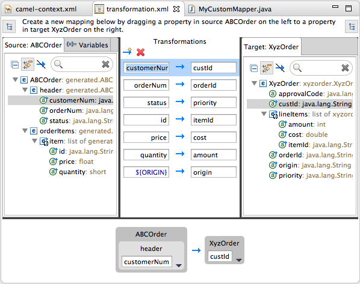In Details view, click on the ABCOrder source box to open the drop-down menu.
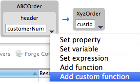Select to open the Add Custom Transformation page.
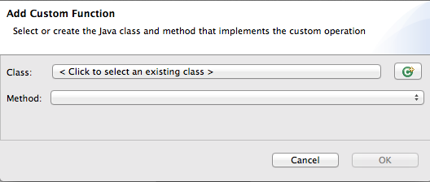Click next to the Class field to open the Create a New Java Class wizard.
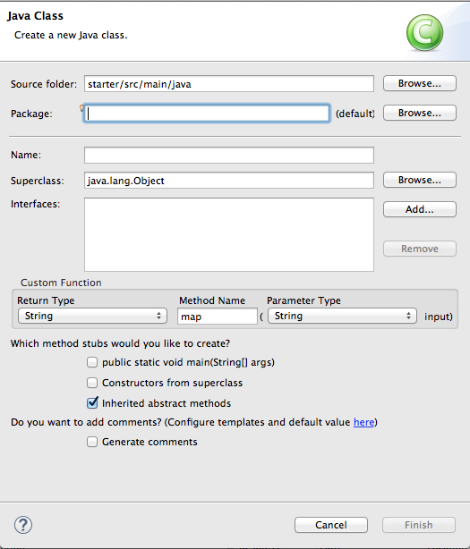Modify the following fields:
Package—Enter
example.Name—Enter
MyCustomMapper.Method Name—Change map to
brackets.
Leave all other fields as is.
Click Finish.
The Add Custom Transformation page opens with the Class and Method fields auto filled:
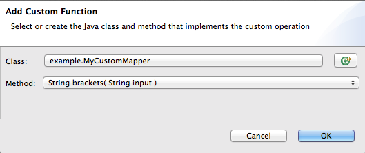Click OK to open the
MyCustomMapper.javafile in the Java editor: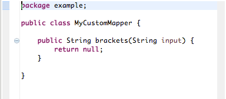Edit the
bracketsmethod to change the last linereturn null;to this:return "[" + input + "]";
Click the transformation.xml tab to switch back to the Transformation editor.
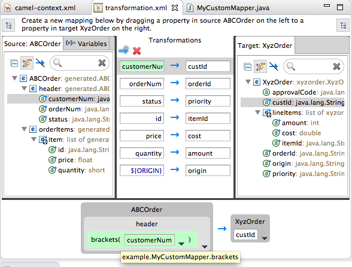Details view shows that the
bracketsmethod has been associated with the customerNum data item.The
bracketsmethod is executed on the source input before it is sent to the target system.Run a JUnit test on your
TransformationTest.javafile. For details, see Creating the transformation test file and running the JUnit test.Console view displays the json-formatted output data:
{"custId":"[ACME-123]","priority":"GOLD","orderId":"ORDER1","origin":"Web", "approvalCode":"AUTO_OK","lineItems":[{"itemId":"PICKLE","amount":1000,"cost":2.25}, {"itemId":"BANANA","amount":400,"cost":1.25}]}
In this tutorial, you will modify an existing mapping that maps all ids in the Source to the itemIds in the Target. The new mapping will map the customerNum data item in the Source to the itemId of the second item in the lineItems collection in the Target.
With this change, no ids in the Source will be mapped to itemIds in the Target.
In the Mappings panel, select the mapping id —> itemId to display the mapping in Details view.
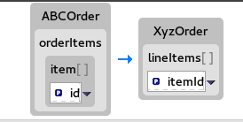On the Source box, click to open the drop-down menu, and select .
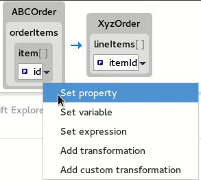In the Select a property page, expand the header node and select customerNum. Click to save the changes.
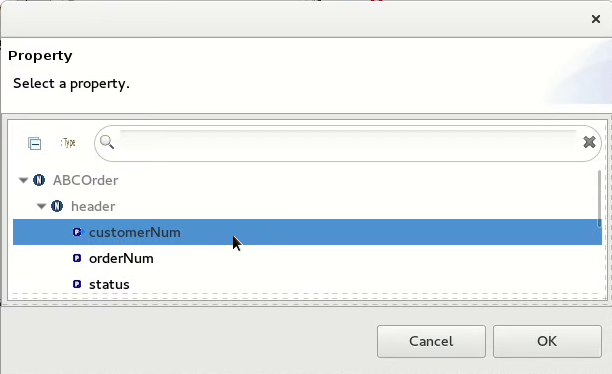The Details View now shows that XyzOrder now has a lineItems field. Click the toggle button next to lineItems to increase its value to
1.Note Indexes are zero-based, so a value of
1selects the second instance of itemId in the collection.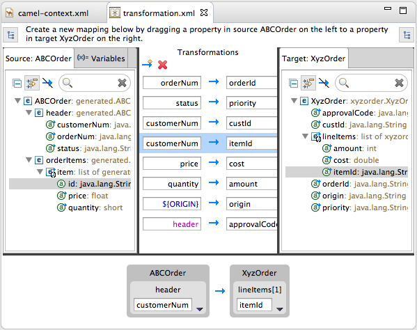Notice that Details view shows customerNum mapped to the itemId of the second item in the lineItems collection.
Run a JUnit test on your
TransformationTest.javafile. For details, see Creating the transformation test file and running the JUnit test.Console view displays the json-formatted output data:
{"custId":"[ACME-123]","priority":"GOLD","orderId":"ORDER1","origin":"Web", "approvalCode":"AUTO_OK","lineItems":[{"amount":1000,"cost":2.25}, {"itemId":"ACME-123","amount":400,"cost":1.25}]}
You can use the built-in string-related functions to apply transformations to mapped data items.
In the Transformations panel, select the status to priority mapping to populate Details view.
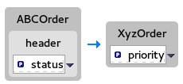In the Source box, click to open the drop-down menu, and select .
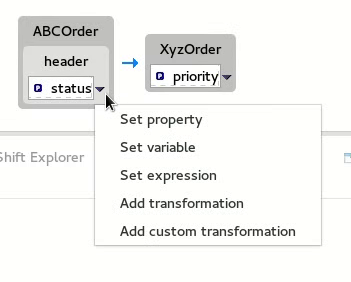In the Transformations pane, select
append, and in the Arguments pane, enter-levelfor the value ofsuffix.This
appendfunction adds the specified suffix to the end of the status string before mapping it to the target priority data item.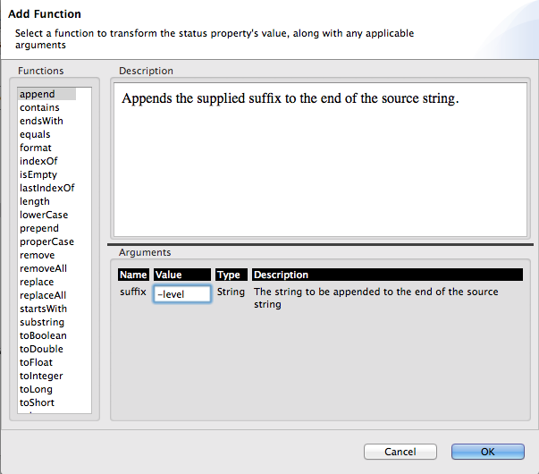Click .

By default, Details view displays the results of adding the
appendfunction to the status data item in a user-friendly format. You can change this formatting by clicking the right-most on the Source box, and selecting .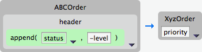Run a JUnit test on your
TransformationTest.javafile. For details, see Creating the transformation test file and running the JUnit test.Console view displays the json-formatted output data:
{"custId":"[ACME-123]","priority":"GOLD-level","orderId":"ORDER1","origin":"Web", "approvalCode":"AUTO_OK","lineItems":[{"amount":1000,"cost":2.25},{"itemId":"ACME-123", "amount":400,"cost":1.25}]}
Before you publish your data transformation project to a JBoss Fuse server (see Publishing Fuse Integration Projects to a Server), you need to install the following features in the JBoss Fuse runtime:
camel-dozercamel-jacksoncamel-jaxb
To install the required features on the JBoss Fuse runtime:
If not already there, switch to Fuse Integration perspective.
If necessary, add the JBoss Fuse server to the Servers list (see Adding a Server).
Start up the JBoss Fuse Server (see Starting a Server), and wait for the JBoss Fuse shell to appear in Terminal view:
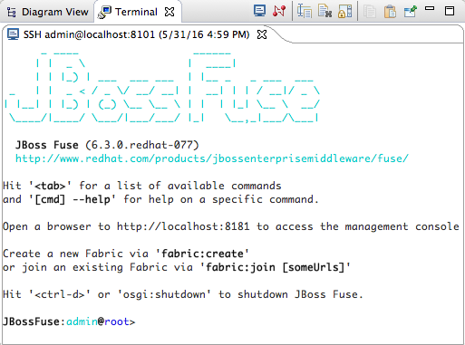For each of the required
camel-features, at theJBossFuse:admin@root>prompt type:features:install camel-<featureName>Where
featureNameis one ofdozer,jackson, orjaxb.To verify that each of the features was successfully installed, at the
JBossFuse:admin@root>prompt type:features:list --ordered --installedYou should see the camel features you just installed in the output listing:
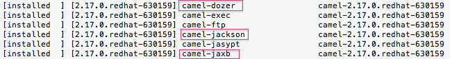